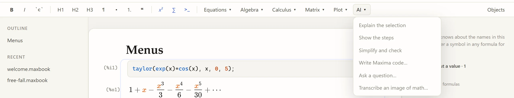

The AI helper
The AI helper is optional and off unless you set it up. It uses Anthropic’s Claude and adds its answers to your notebook as ordinary, editable content.

What it does
Explain the selection |
Explains the selected text, formula or result. |
Show the steps |
Writes out the intermediate steps of a derivation or computation. |
Simplify and check |
Suggests a simpler form and points out possible mistakes. |
Write Maxima code… |
Turns your description ("solve the heat equation on [0,1] with …") into a Maxima block. |
Ask a question… |
Answers a question about the notebook, knowing its Maxima definitions. |
Transcribe an image of math… |
Turns a photo or scan of handwritten or printed mathematics into text and formulas. |
Select something first (text, a formula, or a whole block); without a selection the helper uses the block or paragraph the cursor is in. The answer is inserted below the selection. Read it like any other source: check its mathematics, ideally with Maxima. Ctrl+Z removes it.
Setting it up
The single-file programs include the helper.
When you run Maxbook from Python, install it with pip install -e ".[ai]" (Python 3.10 or newer).
Then give Maxbook access to the Anthropic API in one of these ways, before starting it:
-
set
ANTHROPIC_API_KEYto an API key from your Anthropic developer account, or -
set
ANTHROPIC_AUTH_TOKEN, or -
log in once with Anthropic’s
antcommand-line tool (ant auth login) and setMAXBOOK_AI=1.
-
Windows (PowerShell)
-
macOS and Linux
$env:ANTHROPIC_API_KEY = "sk-ant-..."
.\maxbook-0.5.0-windows-x64.exeexport ANTHROPIC_API_KEY="sk-ant-..."
./maxbook-0.5.0-linux-x64Maxbook prints whether the helper is on when it starts, and the AI menu explains why it is off if it is.
MAXBOOK_AI=0 switches it off even when a key is set; MAXBOOK_AI_MODEL chooses another Claude model (the default is claude-opus-5-5).
Privacy
-
Nothing is sent anywhere until you choose an AI command, and Maxbook asks for your permission before the first one in each browser.
-
What is sent: the selection (or your question or description) together with the notebook’s Maxima input, up to its last 6000 characters, so answers can use your definitions; for Transcribe, only the image. It goes to Anthropic’s API. Anthropic’s terms for API use apply.
-
The API key stays in the Maxbook program on your computer; it is never sent to the browser, to guests, or into the notebook.
-
Guests in a shared session cannot use the helper.
Use of the API is billed by Anthropic to the account the key belongs to.